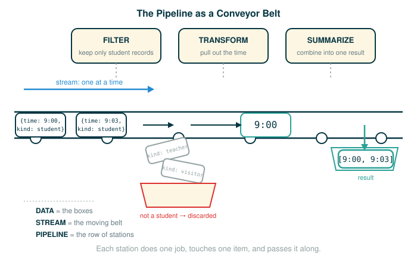

4.1 Data, Streams, and Processing Pipelines
Everything you have built so far asked a focused question: what is the value of this one expression, what does this one function return for this one input. This lesson opens a different door. Real programs often work through enormous collections of information, far more than any person could read by hand, and they do it by moving that information through a sequence of steps.
By the end of this lesson you will be able to do five things: explain what data processing means and why big data needs a program rather than a person, describe a processing pipeline as a chain of small steps, name what a stream is and what "one at a time" buys you, connect the sequence interface you already met in Chapter 2 to the new world of unbounded data, and explain why an infinite sequence is a rule, not a giant stored list.
You will not write iterators or generators today. This lesson builds the mental picture that the rest of Chapter 4 fills in with real Python tools. The habit to carry in is the same one this course has used from day one: when something looks large or abstract, slow down and break it into the smallest meaningful pieces.
A Conveyor Belt in a Factory
Picture a factory line. Boxes ride along a conveyor belt past a row of workers. The first worker glances at each box and reads a label. The second worker pulls off any box that is not a real order and lets the rest pass. The third worker opens each remaining box and writes down just the order total. At the end of the belt, a clerk adds those totals into one number.
Notice three things about that line. No single worker holds the whole day's shipment at once; each one touches a single box, does one small job, and passes it along. The boxes arrive in an order, and that order is part of how the line works. And the line keeps running whether ten boxes come through or ten million, because each worker follows the same rule on every box without getting bored or tired.
That factory line is the whole idea of this chapter. The boxes are data. The moving belt is a stream. The row of workers is a pipeline of processing steps. The rest of this lesson makes each of those words precise and shows the smallest version of each in Python.
Observations Written Down
Before we talk about "big data," start with something small that fits in your hand.
Imagine standing near a doorway and writing down every person who walks into a room:
9:00 student
9:01 teacher
9:03 student
9:04 visitorEach line is one observation. It records something that happened: who entered, and when.
A computer can store observations as data. Each observation might be kept as a small record with two parts, a time and a kind:
time -> "9:00"
kind -> "student"Once the observations are stored, a program can answer questions about them: How many people entered? How many were students? At what times did visitors arrive? This is the smallest possible version of data processing. You collect observations, represent them in a program, and compute something useful from them. Everything later in this chapter is this same loop, scaled up.
From Small Data to Big Data
The phrase big data usually means a collection that is too large, too fast-moving, or too tangled for a person to inspect by eye. The important word is not really "big." The important idea is that the data demands systematic processing.
A handful of items can be read directly:
student, teacher, student, visitorA flood of items cannot:
millions of phone calls
millions of clicks
millions of sensor readingsFor a small list, your eyes do the reading, filtering, and counting. For a large collection, the computer must do all of it: reading each item, filtering out what does not matter, counting, organizing, and summarizing.
The official text frames the payoff this way: modern computers can process vast amounts of data representing many aspects of the world, and from these big data sets we can learn about human behavior in unprecedented ways. The examples it gives are concrete. We can study how language is used, what photos are taken, what topics are discussed, and how people engage with their surroundings. The point is not that every dataset is about people. The point is that real programs routinely process records produced by real activity in the world, and that scale is exactly what makes a program, rather than a person, the right tool.
What a Stream Is
Go back to the conveyor belt. In programming, a moving sequence of values like that is often called a stream.
A stream is a sequence of values made available one at a time.
That short sentence has three load-bearing parts:
- sequence means the values come in an order; there is a first, a next, and so on.
- values means each item is real data the program can use, not a placeholder.
- one at a time means the program does not necessarily need the entire collection in hand at once; it can take the current value, work on it, and then ask for the next.
This "one at a time" idea is the bridge from the sequences of Chapter 2 to the data processing of Chapter 4. The official text states the design directly: to process large data sets efficiently, programs are organized into pipelines of manipulations on sequential streams of data, and this chapter presents a suite of techniques to process and manipulate those streams efficiently. Hold onto two words from that sentence, pipelines and streams, because the next two sections give each one a precise meaning and a small Python example.
Remembering the Chapter 2 Sequence Interface
The official text begins this chapter by reminding you where streams come from: in Chapter 2 you met a sequence interface, implemented in Python by built-in data types such as list and range. Before extending that interface to unbounded data, it helps to see the two examples it names, side by side.
A sequence gives you a way to treat many values as one organized collection. A list is the most direct kind: it stores its values right there in memory.
# (1)
events = ["student", "teacher", "student", "visitor"]
print(len(events))
print(events[0])
print(events[2])
Expected output:
4
student
studentThe line that does the indexing is worth reading token by token:
events[0]
├─ events ...... the list of four entry observations
├─ [ .......... begins an index into the list
├─ 0 .......... the position to select; positions start at 0
├─ ] .......... ends the index
└─ evaluates to "student"The first element sits at position 0, not 1, because Python list positions start counting at zero. So events[0] is "student", and events[2] reaches past the teacher to the second student. The call len(events) reports how many elements the list holds, which is 4.
A range represents a sequence of numbers without writing every one of them out:
# (2)
numbers = range(1, 6)
print(list(numbers))
print(len(numbers))
Expected output:
[1, 2, 3, 4, 5]
5Look at how the range is built:
range(1, 6)
├─ range ...... builds a sequence of integers from a rule
├─ ( .......... begins the inputs
├─ 1 .......... the first value in the sequence
├─ , .......... separates the inputs
├─ 6 .......... the stop value, which is not included
├─ ) .......... ends the inputs
└─ evaluates to the sequence 1, 2, 3, 4, 5The stop value 6 marks where the sequence ends but is itself left out, so the values run 1, 2, 3, 4, 5. The call list(numbers) forces that compact range to display as an ordinary list so you can see the values directly.
The text names list and range together on purpose, because they show two different styles of sequence. A list stores all of its elements explicitly. A range stores only a small rule, a start, a stop, and a step, and produces values from that rule on demand. Chapter 4 is built on exactly this difference: some sequences are worth storing in full, and some are better described by a rule that hands you the next value when you ask.
Processing as a Pipeline
A pipeline is a sequence of processing steps, each one taking the output of the step before it. The conveyor belt, written as a pipeline, looks like this:
raw data -> clean it -> filter it -> transform it -> summarize it
This is the same assembly line you used for transform/filter/aggregate in Section 2.3 — now the belt never has to stop, because the items arrive one at a time.
Each arrow passes data forward; each step has one job. Here is that shape in real Python. Suppose you record room-entry events as small records, then keep only the student events, then reduce each of those to just its time:
# (3)
events = [
{"time": "9:00", "kind": "student"},
{"time": "9:01", "kind": "teacher"},
{"time": "9:03", "kind": "student"},
{"time": "9:04", "kind": "visitor"},
]
student_events = []
for event in events:
if event["kind"] == "student":
student_events.append(event)
student_times = []
for event in student_events:
student_times.append(event["time"])
print(student_times)
Expected output:
['9:00', '9:03']This program has a clear pipeline shape, the same three stations as the factory line:
all events -> student events -> student timesThe condition that drives the filter is worth reading one token at a time, because dictionary lookup inside an if is the heart of this pipeline:
if event["kind"] == "student":
├─ if .......... begins a conditional; run the body only when the test is true
├─ event ....... the current record, one dictionary from the list
├─ ["kind"] .... looks up the value stored under the key "kind"
├─ == .......... compares the two sides for equality
├─ "student" ... the kind we want to keep
├─ : ........... ends the header and begins the indented body
└─ action: when this record's kind is "student", keep the recordNothing magical is happening here. The list events holds four dictionaries, each one observation. The strings "time" and "kind" are keys, and event["kind"] asks for the kind stored in one record. The first for loop filters the records down to students; the second for loop transforms each surviving record into just its time. The power is not in any one step. It is in applying the same simple steps, in order, to every record.
Why Pipelines and Laziness Matter
For four events, the pipeline in (3) looks like overkill. A person can read four records. For four million events, the pipeline is the only thing that works, and the reason connects directly to streams.
First, the pipeline scales because the rule never changes. The same logic applies to event number four and to event number four million:
read an event
check whether it is a student event
if yes, keep its time
move to the next eventThe program does not get tired, and it does not skip a record because the list got boring. It follows the same rule every time. This is why data processing is a natural extension of abstraction: you write one small rule, then apply it across many values.
Second, and this is the idea Chapter 4 will keep returning to, processing items one at a time lets a program avoid building giant intermediate collections. Look again at (3): it builds a whole student_events list, then walks it again to build student_times. For four records that waste is invisible. For four million records, that intermediate list is four million dictionaries sitting in memory just to be read once and thrown away. A streaming version would instead read one event, and if it is a student event, immediately hand its time downstream, keeping only one record in flight at a time:
read one event ──▶ is it a student? ──▶ if yes, emit its time ──▶ next eventDoing work only when a value is actually needed, instead of computing a whole collection up front, is called lazy evaluation. Laziness is what makes the "one at a time" promise of a stream pay off: a lazy pipeline can run over a collection far larger than memory, because it never holds more than the item it is currently working on. It is also what lets a pipeline run over a sequence that has no end at all, which is the next idea.
Unbounded Collections
The official text now extends the sequence interface in a specific direction. In Chapter 2, the sequences you met already existed and had a current size. A list has a length right now. A string has a length right now. A tree has a shape right now. Chapter 4 extends the concept of sequential data to include collections that have unbounded or even infinite size: collections too large to store completely, or that conceptually keep going forever.
There are two different reasons a collection can be unbounded, and the text names an example of each.
First, some sequences are infinite because they follow a mathematical rule with no last term:
1, 2, 3, 4, 5, ...The positive integers never run out. Whatever integer you name, there is always one more.
Second, some sequences are unbounded because the world keeps producing new events while the program runs:
telephone calls through a cell tower
mouse movements made by a user
acceleration measurements from aircraft sensorsThese are the exact real-world examples the official text gives. The collection is not finished simply because time has not stopped.
Infinite Does Not Mean Stored Forever
Here is the trap to avoid. It is tempting to imagine an infinite sequence as an impossibly long list, somehow already sitting in memory. That is not the right mental model, and no computer could hold it.
An infinite sequence is represented by a rule for producing the next value, plus just enough remembered state to apply the rule. For the positive integers, the rule and state are tiny:
start at 1
add 1 whenever the next value is neededHere is a finite slice of that idea in Python. It counts five values, but the underlying rule could run forever:
# (4)
current = 1
for step in range(5):
print(current)
current = current + 1
Expected output:
1
2
3
4
5The single statement that advances the sequence is the whole rule:
current = current + 1
├─ current ..... the name that will hold the next value
├─ = ........... assignment: bind the name on the left to the value on the right
├─ current ..... the value shown a moment ago
├─ + ........... addition
├─ 1 .......... the step that moves to the next integer
└─ action: replace current with the integer that follows itThe variable current holds the number the program is ready to show. After printing it, the program updates current to the next number. This code stops after five values only because range(5) tells the loop to run five times. The rule itself has no stopping point:
1 -> 2 -> 3 -> 4 -> 5 -> 6 -> ...The program never stores every positive integer. It stores one number, current, and the rule for moving past it. That is the pattern the rest of Chapter 4 generalizes: represent a possibly endless sequence by state plus a rule, and produce values lazily, one at a time, only as they are needed.
A Gentle Bridge to Fibonacci Numbers
The official text names a second mathematical infinite sequence: the Fibonacci numbers. They are a small step harder than counting, and seeing why is instructive.
The Fibonacci sequence begins:
0, 1, 1, 2, 3, 5, 8, 13, ...Each new value is the sum of the two values before it:
next value = previous value + value before previous valueThis is harder than counting because the next value depends on two remembered pieces of information instead of one. Counting needs a single memory slot, the current number:
current -> next
1 -> 2
2 -> 3
3 -> 4Fibonacci needs two memory slots, the previous value and the current value:
previous current -> next
0 1 -> 1
1 1 -> 2
1 2 -> 3
2 3 -> 5Here is a finite program that prints the first several Fibonacci numbers using exactly those two slots:
# (5)
previous = 0
current = 1
for step in range(8):
print(previous)
next_value = previous + current
previous = current
current = next_value
Expected output:
0
1
1
2
3
5
8
13The three assignments at the bottom of the loop must run in this order, and the line that computes the new value reads like this:
next_value = previous + current
├─ next_value .. a temporary name for the value about to join the sequence
├─ = ........... assignment
├─ previous .... the older of the two remembered values
├─ + ........... addition
├─ current ..... the newer of the two remembered values
└─ action: compute the next Fibonacci number and hold it asideAfter that, previous = current slides the current value back into the previous slot, and current = next_value moves the freshly computed value into the current slot. The temporary name next_value matters: without it, overwriting previous first would destroy the value the next line still needs. The program is not storing the whole infinite sequence; it is storing only the two numbers it needs to produce the next one. That state-plus-rule pattern is the key idea Chapter 4 uses again and again.
Real Streams from the World
The official text closes the introduction with three real-world unbounded streams, the same three named earlier: the sequence of telephone calls sent through a cell tower, the sequence of mouse movements made by a computer user, and the sequence of acceleration measurements from sensors on an aircraft. Each one shares the same basic shape:
event 1 -> event 2 -> event 3 -> event 4 -> ...A cell tower receives call records throughout the day. A mouse reports movement events many times per second. An aircraft sensor measures acceleration continuously while the plane flies.
Strictly speaking, these are not infinite in the mathematical sense. A particular sensor can fail, a flight ends, a computer shuts down. They are unbounded from the program's point of view, because the program does not know in advance how many events will arrive. That uncertainty changes how you design the program. Instead of always saying:
load the whole collection, then process ityou often want to say:
process each item as it arrivesThat shift, from "store everything, then work" to "work on each value as it comes," is the bridge to the rest of Chapter 4: iterators, generators, streams, and lazy computation, which give you real Python tools for exactly this pattern.
Step-by-Step Trace: One Item at a Time
To make "one at a time" concrete, trace the filter loop from (3) by hand. The table shows the loop variable event and the growing result student_events after each pass. Read it top to bottom; each row is one trip through the loop.
| Pass | event (current record) |
kind | kept? | student_events after pass |
|---|---|---|---|---|
| start | (none yet) | — | — | [] |
| 1 | {"time": "9:00", "kind": "student"} |
student | yes | [{9:00 student}] |
| 2 | {"time": "9:01", "kind": "teacher"} |
teacher | no | [{9:00 student}] |
| 3 | {"time": "9:03", "kind": "student"} |
student | yes | [{9:00 student}, {9:03 student}] |
| 4 | {"time": "9:04", "kind": "visitor"} |
visitor | no | [{9:00 student}, {9:03 student}] |
Two things stand out. The name event is rebound to a different record on every pass; it never holds more than one record at a time. And the result grows only on the passes where the test is true. The machine is not looking at the whole list at once; it is looking at exactly one record, deciding, and moving on. That is the streaming picture in miniature, and it is why the same loop works whether the list has four records or four million.
⚠Common Beginner Traps
One trap is assuming "data processing" must involve advanced mathematics. Many useful pipelines are built from a few plain operations: read, filter, transform, count, and summarize. The skill is composing simple steps, not inventing hard math.
Another trap is believing a stream must already exist as a list. A list is one way to represent a sequence, but the rest of Chapter 4 studies ways to work with values that are produced over time and never fully stored.
A third trap is imagining an infinite sequence as something held in memory. A program cannot store infinitely many values. It stores a rule, plus just enough state, to produce the next value when it is needed.
A fourth trap is assuming a pipeline must build each intermediate collection in full. Building a whole list just to read it once and discard it can waste enormous memory at scale. A lazy, one-at-a-time pipeline keeps only the value it is currently processing, which is what lets it handle collections larger than memory.
A fifth trap is rushing past order. Streams are sequential. The program sees one item, then the next, then the next, and that order is part of the mental model, not a detail to ignore.
✓Check Your Understanding
- Why is a list of four events easy to inspect by eye, while a list of four million events needs a program?
- In your own words, what does it mean for a stream to provide values "one at a time"?
- Run the filter-then-transform pipeline from (3) by hand on this new list, keeping the time of each student event:
[{"time": "10:00", "kind": "teacher"}, {"time": "10:02", "kind": "student"}, {"time": "10:05", "kind": "visitor"}, {"time": "10:06", "kind": "student"}]. What doesstudent_timesprint? - Why is the sequence of positive integers not stored as one enormous list in memory?
- What two pieces of information does the Fibonacci program keep in order to produce the next value, and why does it need a temporary name?
- Why are mouse movements and aircraft sensor readings treated as unbounded streams rather than fixed lists?
Show the answers
- Four events fit in your working memory, so you can read every item directly. Four million events hide whatever pattern you care about inside far too many records, so a program must do the reading, filtering, and counting for you.
- The stream does not hand over the whole collection at once. It gives the program the current value, and later, when the program asks, it gives the next value. The program can work on each value without holding the entire collection.
['10:02', '10:06']. The first loop keeps only the two student records, and the second loop reduces each kept record to its"time", in order.- There is no final positive integer, so Python can never finish building a complete list of all of them. Instead the sequence is described by a rule, "add one to get the next," that produces values as needed.
- It keeps the previous Fibonacci number and the current one; their sum is the next value. It needs the temporary name
next_valueso that computing and storing the new value does not overwrite a slot the following assignment still depends on. - Those events keep being produced by the world over time, and the program does not know in advance how many will arrive. So the program is written to handle the next event as it comes, rather than expecting a fixed, finished list.
§Summary
Chapter 4 begins with data processing: using programs to work through collections of information that are too large, too fast, or too complex to handle by hand. The core mental model is a stream of values riding through a pipeline of small steps, where each step can filter, transform, count, or summarize. Some sequences are finite and stored directly, like a small list. Some are described compactly by a rule, like a range. And some are unbounded or infinite, like the positive integers, the Fibonacci numbers, or the endless stream of calls, mouse movements, and sensor readings the world produces, so a program must represent them as state plus a rule and process their values lazily, one at a time. Working this way lets a program run over collections larger than memory, and even over sequences with no end. That sets up the next step: building Python tools, iterators, generators, and streams, that represent sequential data without requiring every value to be stored at once.
▶Step-Through Checkpoint
The following program is small enough to trace by hand but has the same pipeline shape as a real data-processing task: read records, keep only the ones that match, and accumulate a summary. Stepping through it draws the environment diagram this loop builds: a single global frame where event is rebound to one dictionary at a time and total_call_time is updated in place, with no new frame ever pushed onto the stack. Because this loop never calls a function, the environment stays simple — recall from Chapter 1 that a new frame only opens on a function call, so this trace is meant to be straightforward, not a trick. Before you step through the block below, write down three predictions: how many frames will appear over the whole run, what total_call_time holds after each of the three loop passes, and which line runs immediately after the test on the move event.
# (6)
events = [
{"kind": "call", "duration": 3},
{"kind": "move", "duration": 1},
{"kind": "call", "duration": 5},
]
total_call_time = 0
for event in events:
if event["kind"] == "call":
total_call_time = total_call_time + event["duration"]
print(total_call_time)
Step through it one line at a time and check each prediction. Everything happens in a single global frame, which holds events, total_call_time, and event; no other frame ever opens, because this pipeline is just a loop. You should have seen event rebound to a different dictionary on each pass, never holding more than one record at a time, and total_call_time change only when the current event's kind is "call": it starts at 0, becomes 3 after the first call event, stays 3 through the move event, where the failed test skips the accumulation line and control returns straight to the for line, and becomes 8 after the second call event. The final printed value is 8, and the loop visits the sequence strictly in order, one item then the next.